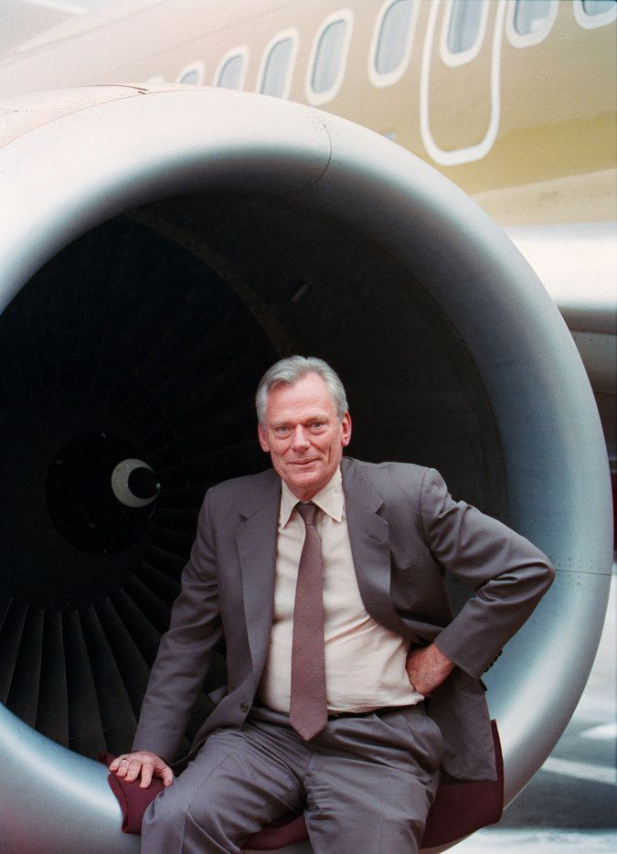

Herb Kellher

Nếu bạn đang viết kịch bản cho một bộ phim về tinh thần doanh chủ, bạn có thể sẽ muốn mở đầu bộ phim này bằng cảnh hai người bạn đang ngồi cùng nhau trong một quán bar và phác thảo những ý tưởng kinh doanh mới ngay trên một miếng khăn ăn. Sau này, doanh nghiệp được tạo ra từ ý tưởng đó đã trở thành một trong những doanh nghiệp thành công nhất từ trước đến nay, mang lại nhiều lợi nhuận cho các nhà đầu tư hơn bất cứ công ty nào khác trong hơn hai mươi năm.
Vấn đề là không ai tin điều đó có thể xảy ra.
Song đó chính xác là những gì đã xảy ra khi luật sư Herb Kelleher và Rollin King đi cùng nhau đến quán bar của Câu lạc bộ St. Anthony ở San Antonio vào năm 1966. Trên miếng khăn ăn, họ đã vạch ra kế hoạch thành lập một hãng hàng không giá rẻ ở bang Texas. Ban đầu, khi King đề xuất ý tưởng này, Kelleher ngay lập tức trả lời: “Ý tưởng này nghe có vẻ hơi kỳ quái.”
Vào thời điểm đó, ngành hàng không bị chính phủ kiểm soát chặt chẽ. Các hãng hàng không đang hoạt động luôn cố gắng tìm cách ngăn chặn những doanh nghiệp hàng không mới. Thế nhưng, người ta đã nhìn thấy một kẽ hở trong quy định pháp luật. Đó là chính phủ cho phép thành lập một hãng hàng không khai thác các đường bay trong tiểu bang.
Vì vậy, Kelleher đã đầu tư mười nghìn đô-la để mở Hãng Hàng không Southwest. Và trong suốt mười năm hoạt động đầu tiên, ông phải liên tục chiến đấu để bảo vệ Southwest khỏi các vụ kiện từ các đối thủ cạnh tranh thời đó là Braniff Airways và Texas International. “Việc ấy cứ như thể tất cả chó săn của nhà Baskervilles đều đồng loạt nhảy bổ vào và cắn xé chúng tôi vậy”, ông nhớ lại. “Một trong những tờ báo tại thời điểm đó từng viết rằng: ‘Đừng phí tiền xem một bộ phim, một vở kịch hoặc tham dự một buổi hòa nhạc nào. Hãy đi xem Herb Kelleher và các luật sư của Braniff và Texas International cấu xé nhau’.”
Trong ba năm nhảy vào trận chiến này, Hãng Hàng không Southwest đã cạn kiệt nguồn vốn. “Ban giám đốc đã đề nghị: ‘Chúng ta chỉ còn cách đóng cửa thôi.’ Lúc đó, tôi đã kiên quyết: ‘Tôi sẽ chi trả mọi chi phí bằng tiền túi của mình và không đòi lại. Để xem chúng ta có thể vực công ty dậy không.’ May mắn thay, chúng tôi đã làm được.”
“Làm được” là một cách nói khiêm nhường để mô tả cho những gì xảy ra sau đó. Mặc dù phải mất tới 5 năm sau cuộc hẹn trong quán bar, Southwest mới có được chuyến bay đầu tiên vào tháng Sáu năm 1971. Nhưng câu chuyện của công ty này lại trở thành một trong những câu chuyện khởi nghiệp vĩ đại nhất từng được viết nên. Trong một ngành công nghiệp đầy rẫy những kiểu cạnh tranh phá giá và những cuộc khủng hoảng kinh tế, còn chi phí nhiên liệu thì liên tục tăng, khiến vô số doanh nghiệp bị thua lỗ, Southwest đã đánh dấu sự kiện đạt lợi nhuận trong 38 năm liên tiếp vào năm 2010 – một chiến tích chưa từng có trong lịch sử ngành hàng không nước Mỹ. Ngày nay, hãng hàng không nội địa lớn nhất nước Mỹ Southwest có doanh thu hằng năm hơn 12 tỷ đô-la, số lượng nhân viên lên tới 32 nghìn người và mạng lưới bay trải rộng khắp 72 thành phố. Quan trọng hơn, một nhà phân tích đã chỉ ra rằng Southwest chiếm đến 90% thị phần hàng không giá rẻ đang tồn tại ở Mỹ.
Ông Kelleher, hiện đã nghỉ hưu, là tấm gương đi đầu trong việc xây dựng một trong những môi trường làm việc dễ chịu nhất nước Mỹ. Ông là hiện thân của văn hóa doanh nghiệp thú vị trong công ty: có phong cách ăn mặc như Elvis Presley trong các sự kiện của công ty, sẵn sàng hỗ trợ vận chuyển hành lý trong những ngày lễ và phục vụ rượu whiskey Wild Turkey cho hành khách trên các chuyến bay.
Bạn sẽ không bao giờ biết được cuộc đời của Kelleher đã sớm gánh chịu nhiều sóng gió nếu chỉ nhìn qua dáng vẻ to lớn, hoạt bát của ông. Cha của ông từng là Tổng Giám đốc Nhà máy Campbell Soup ở bang New Jersey và đã qua đời khi ông mới 12 tuổi. Một trong những người anh em của Kelleher đã hy sinh trong Thế chiến II. Chị gái ông phải đến làm việc tại New York, để mẹ và cậu em trai ở lại quê nhà. Ông còn nhớ, mẹ ông thường phải thức đến bốn giờ sáng để trò chuyện và an ủi ông. “Mẹ đã nói với tôi rất nhiều về cách đối nhân xử thế”, Kelleher hồi tưởng. “Mẹ luôn nói rằng địa vị và chức vụ hoàn toàn chẳng có ý nghĩa gì cả. Chúng chỉ là những vật trang trí; chúng không thể bộc lộ được giá trị của mỗi con người. Những lúc đó, tôi cứ như là một cậu học trò nhỏ của mẹ. Mẹ đã dạy tôi rằng, mỗi con người hay mỗi công việc trên đời đều có giá trị và đáng trân quý như nhau.”
Khi Kelleher làm bài kiểm tra năng lực tại Đại học Wesleyan, nơi ông theo học chuyên ngành tiếng Anh, ông đã khám phá ra rằng chỉ có ba nghề phù hợp với ông nhất là: nhà báo, biên tập viên hoặc luật sư. Ông đã chọn ngành luật và đến với Đại học Luật New York. Ông nhận ra “đó là những năm tu nghiệp đáng giá nhất. Tôi học cách tìm ra sự thật trong những lời đồn thổi, học cách xác định vấn đề và sau đó tìm giải pháp. Đó là kỹ năng cần thiết cho bất cứ hoạt động nào mà anh làm trong cuộc sống.”
Tất cả kiến thức đó đã trở thành hành trang hữu ích trong suốt cuộc đời của Kelleher, nhất là khi ông phải đương đầu với những năm tháng đầy rẫy kiện tụng để cứu Southwest Airlines ra khỏi vòng vây của các đối thủ. Ngay cả sau khi chiếc máy bay đầu tiên của Southwest đã cất cánh trên đường băng, nhà đồng sáng lập ấy vẫn tiếp tục hành nghề luật sư dù đã trở thành Chủ tịch Southwest vào năm 1978. Phải đến đầu năm 1982, Kelleher mới dành toàn bộ thời gian cho công ty với vai trò Giám đốc điều hành. Tính đến thời điểm ông rời khỏi vị trí này vào năm 2001, giá trị vốn hóa thị trường của Southwest đã lớn hơn cả giá trị của các hãng American Airlines, United Airlines và Continental Airlines cộng lại. Kelleher đã trở thành một huyền thoại trong giới kinh doanh.
Về văn hóa Southwest
Cốt lõi của kinh doanh là con người. Ở nhiều công ty, anh phải che giấu cá tính thật của mình khi đến sở làm. Trong mắt người khác, anh không bao giờ thực sự nghiêm túc và siêng năng, trừ khi anh là một cỗ máy tự động. Chúng tôi không bao giờ làm như thế ở công ty này. Chúng tôi luôn cảm thấy nếu anh cho phép nhân viên được là chính họ khi làm việc, họ sẽ hứng thú với công việc hơn. Một khi đã yêu thích công việc của mình thì họ sẽ làm việc hiệu quả hơn. Ngoài ra, chúng tôi nghĩ rằng không nên chỉ chăm chăm chú ý đến công việc của nhân viên mà còn phải quan tâm đến cả cuộc sống cá nhân của họ nữa. Ở Southwest, không có một sự kiện quan trọng nào của nhân viên, dù là tin tốt hay tin xấu, sinh con hay tang chế, mà chúng tôi không biết.
Chúng tôi luôn cố gắng lắng nghe mọi nguyện vọng của nhân viên và cùng chia sẻ những điều quan trọng trong đời sống cá nhân của họ.
Tại Southwest, sẽ không có chuyện anh không nhận được lời thăm hỏi từ cấp trên khi anh vừa có con. Chúng tôi cũng sẽ phân ưu, động viên anh vượt qua buồn đau nếu có ai đó trong gia đình anh vừa qua đời. Nếu anh mắc phải một căn bệnh nặng, chúng tôi sẽ liên lạc với anh hai tuần một lần để thăm hỏi tình hình sức khỏe. Có những nhân viên đã nghỉ hưu mười năm nhưng chúng tôi vẫn giữ liên lạc với họ. Chúng tôi muốn họ biết rằng chúng tôi trân trọng họ với tư cách cá nhân, chứ không phải chỉ là giữa ông chủ và người làm công. Đó là một phần của tinh thần đồng đội ở Southwest.
Chúng tôi đã đưa ra kế hoạch chia sẻ lợi nhuận đầu tiên trong ngành công nghiệp hàng không. Nhân viên của chúng tôi luôn ý thức họ cũng là những người sở hữu công ty. Tôi muốn kể với anh hai câu chuyện mà tôi rất thích. Có lần, nhân viên bán vé của Western Airlines ở Los Angeles đã hỏi mượn một cái dập ghim từ nhân viên chăm sóc khách hàng của chúng tôi. Anh nhân viên của chúng tôi đã mang nó đến tận quầy bán vé của họ, rồi cứ đứng chờ ở đó. Các nhân viên ở quầy bèn hỏi anh ta: “Ủa, sao anh còn đứng ở đây?” Anh ta liền đáp lại rằng: “Tôi muốn mang cái dập ghim về vì nó sẽ ảnh hưởng đến việc chia sẻ lợi nhuận của công ty tôi.”
Còn câu chuyện thứ hai xảy ra ở bộ phận chăm sóc khách hàng ở Sân bay quốc tế San Antonio (thành phố San Antonio, bang Texas). Lúc đó, sau một hồi gây khó dễ cho một nhân viên của chúng tôi, một hành khách đã lớn tiếng đe dọa: “Cô có biết tôi là một trong những cổ đông của hãng này không?” Cô nhân viên của chúng tôi chỉ từ tốn trả lời: “Thưa bà, tất cả chúng ta đều là cổ đông mà!”
Điều đó thật kỳ diệu. Song, chúng tôi không bao giờ nghĩ rằng sự bù đắp là động lực chính của Southwest. Nếu ai đó làm việc chỉ để được bù đắp bằng chính ngân sách, chúng tôi sẽ không muốn họ tiếp tục làm việc cho hãng nữa. Chúng tôi muốn họ nỗ lực hết sức mình để mang lại những điều tốt nhất cho khách hàng.
Vì vậy, chúng tôi vẫn thường nói với mọi nhân viên rằng: “Phục vụ khách hàng là động lực, là một cuộc thập tự chinh[22]. Southwest không phải là một công ty bình thường và các bạn đang làm nhiều điều tốt đẹp cho hành khách. Chúng tôi luôn tự hào về các bạn và chúng tôi muốn các bạn thực sự hài lòng khi làm việc ở đây.” Thậm chí, có những nhân viên còn chấp nhận giảm bớt 25% tiền lương của mình bởi lý do đơn giản: “Chúng tôi chỉ muốn tận hưởng những điều mình đang làm.”
Quỹ hưu trí tư nhân[23] (Quỹ 401k) và quyền mua cổ phiếu dành cho nhân viên đã kích thích mọi người làm việc nhiệt tình hơn. Mặc dù quỹ hưu trí hay giá cổ phiếu vẫn luôn biến động nhưng mọi người vẫn sẵn sàng chấp nhận rủi ro với mức lương thấp hơn vì họ muốn cảm thấy hạnh phúc ở nơi làm việc.
Một nhân viên mặt đất ở Sân bay Oklahoma (bang Oklahoma) đã viết thư cho tôi với nội dung: “Kính thưa Tổng Giám đốc, tôi hiểu được những gì ông đang làm. Ông đang giúp cho công việc của tôi trở nên vui vẻ, ngay cả khi làm việc ở nhà cũng vậy.”
Về quản lý và lãnh đạo
Chúng tôi nói với mọi người rằng nếu anh muốn có một chiếc hộp đóng góp ý kiến thì anh đã tự nhận mình là một kẻ thất bại trong vai trò quản lý. Nếu anh thực sự biết cách nói chuyện với nhân viên của mình, anh sẽ không cần một chiếc hộp như thế. Chiếc hộp chỉ tạo ra khoảng cách giữa con người với nhau, chứ không mang họ đến gần nhau hơn. Chúng tôi luôn hoạt động với quan điểm là công ty có thể có một cá tính riêng và nhân viên có thể là chính họ.
Nhiều năm trước, các trường kinh doanh đã từng đặt ra một câu hỏi hóc búa: “Ai là người quan trọng nhất? Nhân viên của bạn, cổ đông của bạn, hay khách hàng của bạn?” Thật sự câu hỏi này không có gì khó cả. Khách hàng sẽ là người quan trọng nhất. Hãy thử đoán xem chuyện gì sẽ xảy ra nếu anh đối xử tốt với nhân viên? Lúc đó, khách hàng sẽ yêu mến công ty anh và làm cho các cổ đông của anh vui vẻ. Vì vậy, hãy bắt đầu từ các nhân viên, những phần còn lại sẽ tự động theo sau thôi. Và điều tất nhiên là anh phải tìm được những người có thái độ tích cực. Chúng tôi đã phải lùng sục rất lâu để tìm ra những nhân viên có tố chất này.
Cách đây vài năm, tôi có một bài phát biểu trong buổi lễ tốt nghiệp tại Đại học Kinh tế Yale. Trong phần giao lưu, khi một sinh viên phát biểu rằng: “Tôi thấy ngài đang nói về một tôn giáo nhiều hơn là về một hoạt động kinh doanh đấy ạ.” Tôi đã đáp: “Nếu bạn cảm thấy như vậy về công việc kinh doanh của mình, tôi cho rằng đó là điều tốt. Nó là một lợi thế đấy.”
Từ sức mạnh thật sự khiến tôi khó chịu. Từ sức mạnh chỉ nên được sử dụng trong môn cử tạ hay khi lái tàu thủy thôi. Đừng nghĩ về sức mạnh. Hãy nghĩ về việc nuôi dưỡng, phát triển nhân viên và tạo cơ hội để phát triển những tiềm năng khác của họ. Thật ngạc nhiên là có rất nhiều doanh nghiệp đang khiến người ta bị mắc kẹt. Một khi anh đã rơi vào đó, thế là hết. Tình trạng này giống như khi anh bỏ lá thư vào hòm thư bưu điện; nó nằm trong đó luôn. Khi anh để cho nhân viên của mình tự do khám phá và thử nghiệm nhiều lĩnh vực khác nhau, họ sẽ có nhiều cơ hội bộc lộ những khả năng tiềm ẩn lớn lao hơn anh nghĩ. Vào một ngày nọ, một đoàn khách đã đến hãng hàng không của chúng tôi và gặp gỡ ba nhân viên để cùng bàn luận một vấn đề khá phức tạp về hệ thống. Sau đó, họ đã gọi cho tôi và nói: “Herb, chúng tôi rất ấn tượng với những người đại diện cho Southwest trong cuộc họp này.” Tôi tự hào nói: “Vâng, các anh sẽ còn cảm thấy ấn tượng hơn nếu biết rằng cả ba người đó đều không có mảnh bằng đại học nào trong tay.” Sự đoàn kết và tính linh hoạt là phong cách làm việc của Southwest.
Tuyển dụng đúng người
Chúng tôi còn cẩn thận trong khâu tuyển dụng nhân viên hơn cả giới tăng lữ. Tuyển dụng đúng người gần như trở thành một tôn giáo tại Southwest. Chúng tôi đặt tên cho bộ phận tuyển dụng là phòng nhân sự. Vì nếu để là phòng nhân lực thì nghe như thể đang khai thác than hoặc thép gì ấy. Có lần, một nhân viên phòng nhân sự nói với tôi rằng: “Thưa Tổng Giám đốc, tôi cảm thấy hơi xấu hổ vì tôi đã phải phỏng vấn tới 34 người chỉ để tuyển một vị trí nhân viên mặt đất ở sân bay Amarillo thôi ạ.” Anh biết phản ứng của tôi là gì không? “Nếu anh phải phỏng vấn đến cả 134 người để tìm được người phù hợp với vị trí nhân viên mặt đất ở Sân bay Amarillo thì anh cứ làm điều đó.” Điều quan trọng nhất trong công tác tuyển dụng nhân viên là phải chọn đúng người. Nếu anh chọn sai người, họ sẽ làm hỏng cả những người khác.
Nếu có một nhân viên nào đó không thoải mái với văn hóa Southwest, điều tốt nhất là nên để họ ngừng làm việc. Chúng tôi luôn cố gắng giúp mọi người bằng mọi cách có thể.
Trong công ty có rất nhiều nhân viên có bằng thạc sĩ quản trị kinh doanh nhưng chúng tôi tuyển dụng họ vì thái độ và sự nhạy bén trong kinh doanh của họ. Công ty sẵn sàng chọn những người chưa có nhiều kinh nghiệm, ít bằng cấp, ít chuyên môn thay vì những người có đầy đủ những điều đó nhưng lại có thái độ làm việc tệ hại. Nếu nhân viên chưa có hoặc thiếu bằng cấp, chuyên môn, kinh nghiệm, chúng tôi có thể đào tạo và huấn luyện cho họ. Chỉ cần họ có thái độ tích cực trong công việc, chúng tôi có thể chỉ cho họ cách lãnh đạo, có thể huấn luyện cách cung cấp dịch vụ khách hàng tốt nhất. Nhưng chúng tôi không thể thay đổi bản chất của họ nếu họ vốn đã không có thái độ phù hợp.
Chúng tôi có xu hướng tuyển dụng những thạc sĩ quản trị kinh doanh có thái độ khiêm tốn, luôn nghĩ rằng mình chỉ vừa mới bắt đầu sự nghiệp và có rất nhiều điều cần phải học hỏi. Giống như trong ngành luật, mỗi luật sư đều phải mất ít nhất 5 năm mới có thể gọi là thạo nghề. Đó là lý do chúng tôi luôn tìm kiếm những thạc sĩ quản trị kinh doanh khiêm nhường. Họ sẽ luôn ý thức rằng họ phải tìm hiểu hoạt động của công ty để biết cách đối nhân xử thế. Họ phải học để biết cách giao tiếp với khách hàng. Một khi họ đã thành thục, họ sẽ sẵn sàng để bắt đầu lập kế hoạch và làm tất cả những việc khác.
Lý do thành công của Southwest?
Đầu tiên, chi phí thấp là một yếu tố rất quan trọng. Nhưng nếu bạn không có nhiều vốn, bạn không thể cạnh tranh lâu dài được. Southwest là hãng hàng không có tiềm lực tài chính vững mạnh nhất trong ngành. Thế nên, chúng tôi sẽ không bị ảnh hưởng nếu một hãng hàng không nào đó muốn áp dụng phương thức vé rẻ như chúng tôi nhưng phải trả chi phí vận hành cao hơn. Nếu họ muốn bước vào một cuộc chiến, dù cuộc chiến đó kéo dài 2 năm, 5 năm, 10 năm hoặc hơn thế nữa, chúng tôi luôn sẵn sàng chiến đấu để giữ vững thành quả của công ty.
Nhưng vấn đề ở Southwest không chỉ là giá vé thấp. Theo kết quả khảo sát 100 nghìn hành khách đi lại bằng đường hàng không của Bộ Giao thông vận tải, Southwest là hãng hàng không ở Mỹ đạt kỷ lục có tỷ lệ khách hàng hài lòng cao nhất và tỷ lệ khách hàng phàn nàn ít nhất. Vì vậy, điều quan trọng là anh không chỉ đưa ra giá vé thấp mà anh còn cần một dịch vụ khách hàng hoàn hảo. Tôi thường nói với nhân viên rằng những giá trị vô hình còn quan trọng hơn nhiều so với những thứ hữu hình. Ai cũng có thể mua những thứ hữu hình, nhưng không phải ai cũng có thể dễ dàng tạo nên những giá trị vô hình. Điều tôi đang nói đến chính là niềm vui trong cuộc sống - sức mạnh tinh thần của nhân viên Southwest.
Khi quy định bãi bỏ sự kiểm soát của chính phủ đối với ngành hàng không được ban hành, các đơn vị quảng cáo của chúng tôi như Austin, GSD&M (còn được biết đến với tên đầy đủ là Greed, Sex, Drugs and Money), vì một lý do nào đó mà tôi không rõ, đã chất vấn tôi: “Herb này, bây giờ đã có lệnh dỡ bỏ. Ai cũng có thể bay đến bất cứ nơi nào họ muốn. Họ có thể chọn bất kỳ hãng hàng không nào. Thế Southwest có gì đặc biệt để thu hút hành khách không?”
Tôi liền nói: “Có chứ! Đó là nhân viên của chúng tôi.” Và đây cũng là xuất phát điểm của chiến dịch “Tinh thần Southwest”. Câu trả lời này đã trở thành một rủi ro lớn vì anh biết những gì đang diễn ra trên các tờ báo, tạp chí, trên truyền hình, trên đài phát thanh lúc ấy rồi đấy. Điều đó đồng nghĩa với việc tôi đang muốn nói với tất cả các khách hàng tương lai của mình rằng: Nhân viên của chúng tôi là tốt nhất; họ nồng nhiệt; họ hiếu khách; họ niềm nở khi gặp bạn; họ luôn sẵn lòng giúp đỡ bạn.
Nếu không làm đúng như thế, chúng tôi sẽ tự rước họa vào thân. Trong 5 năm, chúng tôi nhận được một lá thư khiếu nại cho rằng nhân viên của Southwest không hoàn hảo như những gì tôi đã ca tụng. Nhưng nội dung bức thư lại viết như thế này: “Herb, vừa rồi, tôi đến sân bay El Paso và một nhân viên chăm sóc khách hàng đã bán vé cho tôi với thái độ không giống nhân viên của Southwest chút nào. Có gì đó không ổn với nhân viên này rồi.”
Anh có thấy sự khác biệt không? Southwest không xấu nhưng nhân viên này là “con sâu làm rầu nồi canh”. Chúng tôi không cho phép nhân viên này tiếp tục làm việc cho công ty nữa. Những sự việc như vậy giúp mọi người biết rằng nhân viên của Southwest là những người đặc biệt trong lĩnh vực này.
Có một anh chàng từ quận St. Louis[24] gọi đến trung tâm đặt vé ở Dallas[25] của chúng tôi và trình bày rằng anh ta có đặt một vé máy bay khởi hành từ sân bay quốc tế Dallas - Fort Worth (DFW) đến quận St. Louis cho mẹ của anh ấy, hiện đã 85 tuổi; nhưng Hãng Hàng không TWA đã hủy chuyến bay này và buộc bà phải chuyển sang chuyến bay khởi hành từ Sân bay Love Field, rồi sau đó phải trung chuyển ở thành phố Tulsa trước khi đến St. Louis. Với một lịch trình như vậy thì anh ta rất lo lắng cho tình hình sức khỏe của mẹ mình. Khi đó, một nhân viên phòng đặt vé đã trấn an anh ta: “Xin anh yên tâm! Còn năm phút nữa là hết ca trực của tôi rồi ạ! Tôi sẽ lái xe đến sân bay DFW đón bà cụ, đưa bà đến Sân bay Love Field và sẽ đi cùng bà trên chuyến bay đến St. Louis để chắc chắn rằng bà đến nơi an toàn.”
Đó là sự cống hiến mà tôi muốn nói đến.
Có một hành khách đột nhiên lên cơn đau tim tại Sân bay Love Field và được đưa đến bệnh viện. Sau khi gọi điện thoại thông báo cho vợ của vị hành khách này, nhân viên bán vé của chúng tôi vẫn túc trực ở bệnh viện suốt cả đêm hôm đó. Tôi còn nhận được lá thư từ một hành khách của một hãng hàng không khác với nội dung như sau: “Kính gửi Tổng Giám đốc Kelleher, tôi không thể tin được. Tôi đã xuống máy bay, đi ra bãi đậu xe và phát hiện bánh xe của mình bị thủng lốp. Trong khi tôi còn đang loay hoay chưa biết sẽ làm gì thì một nhân viên của ông đã đến và thay lốp xe cho tôi. Tôi có nói với anh ta: ‘Này anh, tôi không phải là hành khách của Southwest đâu.’ Cậu nhân viên ấy vẫn ôn tồn đáp: “Thưa ông! Việc đó không quan trọng với chúng tôi đâu ạ!” Thế đấy, dù bạn có là hành khách của Hãng Southwest hay không cũng sẽ không có sự khác biệt nào trong cách đối xử của nhân viên chúng tôi. Đó là kiểu nhân viên mà chúng ta mong muốn có được.
Chúng tôi cho rằng ai cũng có thể là một nhà lãnh đạo, dù người đó có đang làm nghề nào đi chăng nữa. Chúng tôi muốn anh tập trung vào dịch vụ khách hàng không chỉ đối với người ngoài mà cả với đồng nghiệp nữa. Nếu một nhân viên tiêm nhiễm thói xấu cho những đồng nghiệp khác, sau đó những nhân viên này lại làm tổn hại đến những người tiếp xúc với khách hàng thì cả công ty sẽ bị suy sụp.
Về việc tặng cổ phần cho nhân viên
Chúng tôi cho rằng tất cả nhân viên, dù họ làm công việc gì hay ở vị trí nào, cũng đều có một vị trí sở hữu trong công ty. Do vậy, mọi nhân viên của Southwest đều có quyền mua cổ phiếu của công ty với giá cố định[26]. Chúng tôi có từ bảy, tám thỏa thuận tập thể với công đoàn của chúng tôi.
Southwest là hãng hàng không có tổ chức công đoàn mạnh nhất ở Mỹ và là công ty đặt nền tảng cho quyền mua cổ phiếu của nhân viên. Nhân viên của chúng tôi được quyền mua cổ phiếu qua một điều khoản có trong hợp đồng với công đoàn và họ đã thực hiện quyền này khá tốt. Có một lần, tôi bay sang San Antonio. Khi đó, cô Connie, một nhân viên có thành tích làm việc rất tốt trong 15 năm liền đã xin phép: “Thưa Tổng Giám đốc, tôi có thể nói chuyện riêng với ông được không?”
Tôi nói: “Được chứ.”
Cô ấy nói tiếp: “Giá trị cổ phần của tôi giảm xuống chỉ còn 1,2 triệu đô-la thôi. Ông có giúp tôi được không?”
Tôi đã cố gắng giúp đỡ cô ấy và các nhân viên khác để họ yên tâm công tác. Công ty có một phi công vừa mới nghỉ hưu và lãnh được tám triệu đô-la phần lợi nhuận chia sẻ, chưa bao gồm tiền hưu trí từ Quỹ 401k.
Cái giá của quyền lựa chọn mua cổ phiếu này là gì? Nếu quyền lựa chọn (mua cổ phiếu) không mang lại lợi ích, chúng sẽ chẳng có giá trị gì cả vì chẳng ai thực hiện chúng. Nhưng nếu cổ phiếu tăng giá thì tất cả các cổ đông đều sẽ được hưởng lợi rất lớn.
Từng có trường hợp quyền mua cổ phiếu đã biến nhân viên thành người chủ sở hữu và liên kết họ với các mục tiêu của công ty. Như một hệ quả tất yếu, tất cả mọi người sẽ làm việc chăm chỉ hơn và hiệu quả hơn.
Sau đó, đột nhiên, mọi người lại không ủng hộ quyền lợi này nữa. Tôi nghĩ nguyên nhân là do một số công ty, đặc biệt trong lĩnh vực công nghệ cao, đã cho họ đến 100 triệu cổ phiếu một lúc.
Về việc sa thải nhân viên
Sa thải nhân viên là điều khiến tôi khó chịu nhất. Không có gì giết chết nền văn hóa công ty nhanh như việc sa thải nhân viên. Chưa từng có nhân viên nào trong công ty xin thôi việc và điều này chưa từng xảy ra trong ngành công nghiệp hàng không. Đó là một lợi thế rất lớn của chúng tôi. Nó đã giúp chúng tôi đàm phán được những hợp đồng với công đoàn. Trong một cuộc đàm phán với chúng tôi, một trong những nhà lãnh đạo công đoàn – lãnh đạo của Công đoàn Teamsters – đã nói: “Chúng tôi biết là chúng tôi không cần lo về bảo hiểm nghề nghiệp khi đàm phán với anh.”
Chúng tôi có thể cho nhân viên thôi việc vào những thời điểm khác nhau và thu được nhiều lợi nhuận hơn, nhưng tôi luôn nghĩ rằng điều đó rất thiển cận. Anh muốn cho nhân viên thấy rằng anh trân trọng họ và anh sẽ không làm tổn thương họ chỉ để có thêm một chút tiền ngắn hạn. Việc không sa thải nhân viên sẽ nuôi dưỡng lòng trung thành và một cảm giác an toàn, một cảm giác tin tưởng của họ đối với công ty. Vì vậy, trong thời gian khó khăn của công ty, anh hãy quan tâm đến họ và có thể họ sẽ suy nghĩ rằng: “Mình chưa từng bị mất việc. Đó là một lý do khá tốt để tiếp tục làm việc ở đây.”
Về Phố Wall.
Không chỉ có các hãng hàng không khác khinh thường những gì chúng tôi làm mà ngay cả cộng đồng tài chính New York cũng vậy. Mỗi lần tôi đến đó, họ thường thuyết giáo tôi và đưa ra lời khuyên: “Herb này, bây giờ chúng ta đã được bãi bỏ lệnh kiểm soát, anh nên làm giống như các hãng hàng không khác đi.” Tôi chỉ đáp lại: “Không, tôi không nghĩ như vậy.”
Gần mười năm sau, trong một buổi hội thảo đầu tư, một nhà phân tích của Ngân hàng Đầu tư Tài chính Credit Suisse First Boston đã đứng dậy và phát biểu: “Trong mười năm qua, chúng tôi đã tư vấn nhiều phương thức hoạt động cho Southwest nhưng Herb Kelleher luôn bỏ ngoài tai những lời nói của chúng tôi. Giờ đây, Southwest là hãng hàng không thu lợi nhuận nhiều nhất nước Mỹ, thiết nghĩ chúng ta chẳng cần phải tư vấn cho họ nữa.” Không ai tin chúng tôi sẽ thành công. Các hãng vận tải khác nghĩ rằng chúng tôi chỉ là một hiện tượng nhất thời và thành công đó không thể kéo dài.
Thời trước, chỉ có duy nhất hai hãng ủng hộ việc bãi bỏ sự kiểm soát của chính phủ – đó là United Airlines, một “ông lớn” và Southwest, một công ty nhỏ bé.
Khi gặp tôi, nhiều người dân ở Washington nói rằng: “Chúng tôi hiểu tại sao United lại ủng hộ việc này. Còn Southwest chỉ là một công ty nhỏ bé. Tại sao ông lại ủng hộ việc dỡ bỏ sự kiểm soát của chính phủ?” Và tôi thích thú trả lời họ: “Vâng, tôi nghĩ rằng chúng tôi đã chứng minh Southwest có thể cạnh tranh khá tốt so với các hãng hàng không khác và chúng tôi muốn có điều kiện thuận lợi hơn để làm điều đó.” Sau đấy, tôi nhận được bức thư của một nghị sĩ bang Texas có nội dung: “Herb, tôi muốn nói với ông vài điều. Ông sẽ hủy hoại Southwest nếu ông mang nó vượt ra khỏi ranh giới của bang Texas.”
Tôi đã phúc đáp lại: “Thưa ngài Nghị sĩ, tôi xin nhắc nhở ông rằng chính con người tạo ra ranh giới của Texas chứ không phải Chúa Trời.” Anh biết ông ta trả lời sao không? “Herb, anh có chắc không vậy?”
Về việc thành lập công ty ngày nay.
Tôi cho rằng việc thành lập một doanh nghiệp vào thập niên 1930 sẽ dễ hơn thập niên 1960 hay 1970 và mở một doanh nghiệp vào năm 1890 thậm chí còn dễ dàng hơn thập niên 1930 nữa. Khi xã hội ngày càng có nhiều luật lệ, thì việc bắt đầu một dự án kinh doanh càng trở nên khó khăn hơn.
Khi tôi bắt đầu hành nghề luật sư, tôi nhận ra một sự thật là chỉ 5% việc kinh doanh của công ty luật là liên quan đến chính phủ, 95% còn lại liên quan đến khách hàng. Hiện nay, chỉ còn 50% hay 60% công việc là thuộc về khách hàng.
Vì vậy, tôi nghĩ rằng việc mở doanh nghiệp ngày nay khó khăn hơn nhưng không phải là bất khả thi. Anh phải kiên trì và nhẫn nại. Thế giới sẽ không dâng tiền bạc cho anh chỉ vì anh có một ý tưởng hay. Anh sẽ phải làm việc như điên để ý tưởng đó có thể thu hút sự quan tâm của mọi người. Nếu họ không biết đến nó, họ sẽ không mua nó.
Anh cần phải có gấp năm lần số vốn mà anh nghĩ mình cần vì nếu anh là một doanh nhân, anh sẽ thấy lạc quan về hoạt động kinh doanh của mình. Anh sẽ nghĩ rằng, trong sáu tháng anh có thể kinh doanh thuận buồm xuôi gió. Nhưng sự lạc quan đó khiến anh huy động được số vốn ít hơn so với nhu cầu và như thế thì không đủ.
Người dân ở Texas từng cho rằng tôi là kẻ mất trí khi cố gắng thành lập Southwest. Chẳng ai nghĩ chúng tôi có thể thành công cả. Đôi khi, anh cũng cần một chút can đảm để đánh bật những suy nghĩ thông thường.